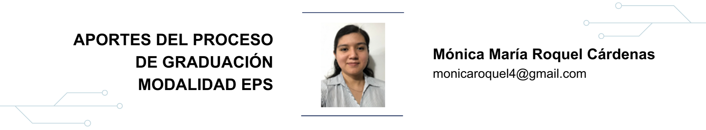

1 Aportes del proceso de graduación modalidad EPS

1.1 Resumen
Para culminar la licenciatura de Ingeniería en la Universidad de San Carlos de Guatemala se puede optar por la modalidad EPS que proporciona al estudiante las herramientas necesarias para generar criterio profesional en actividades como supervisión, diseño y planificación de proyectos aplicados en el ámbito real. Es una oportunidad de integrar al futuro profesional, al mundo laboral en el que pueda demostrar sus aptitudes y aportes de trabajo en equipo, así como aportar al desarrollo social mediante la realización de los proyectos de EPS.
1.3 Introducción
El Ejercicio Profesional Supervisado ha ido adquiriendo mayor importancia en la elección para el proceso de graduación, debido a que le ofrece al futuro profesional experiencias laborales y aporta a las comunidades propuestas, técnicas de desarrollo social por medio de los proyectos que son objeto de ejecución en esta modalidad, apegados a la realidad nacional que se vive en el país.
La supervisión que ofrece esta modalidad en la ejecución de actividades profesionales en instituciones públicas centralizadas y descentralizadas o empresas con interés social brinda al estudiante la confianza y el espacio para poner en práctica las aptitudes y conocimientos adquiridos en el ámbito académico; por lo que su importancia radica en la especialización del estudiantado, tanto laboral como personalmente.
1.4 Artículo
Proceso de graduación de licenciatura en ingeniería civil modalidad EPS
Posterior al cierre de pensum de la Carrera de Ingeniería Civil de la Facultad de Ingeniería de la Universidad de San Carlos de Guatemala, el estudiante puede seleccionar cualquiera de las 5 opciones que el artículo 63 del Normativo de Evaluación y Promoción de los Estudiantes de Pregrado de la Facultad de Ingeniería ofrece, en las que se destaca la de graduación mediante el Ejercicio Profesional Supervisado de 3 o 6 meses; en esta se le asigna al estudiante una cantidad específica de proyectos que puede desarrollar, según la duración por la cual opte.
Los objetivos del EPS
El proceso de graduación modalidad Ejercicio Profesional Supervisado en cualquier duración brinda al estudiante la oportunidad de adquirir experiencia en actividades de investigación y de servicio técnico-profesional universitario en el medio real relacionado con la profesión. Así también, el programa de EPS permite que se puedan fortalecer las conductas sociales, integrando al estudiante en el ámbito nacional y creando una relación entre la empresa o institución con la comunidad, sobre la cual se realicen propuestas de proyectos profesionales ingenieriles para el desarrollo social.
Lugares de interés para su desarrollo
Tal como lo indica el artículo 4 del Normativo del Ejercicio Profesional Supervisado de Graduación (EPS Final) de la Facultad de Ingeniería de la Universidad de San Carlos de Guatemala, el EPS se puede realizar en instituciones y empresas con interés social que puedan aportar prácticas profesionales, priorizando aquellas que realicen actividades no lucrativas o que tengan un impacto social.
Ventajas del EPS
Establece el desarrollo de actividades laborales en el campo de la ingeniería.
Fortalece las conductas sociales y la apreciación del ámbito nacional real, así como la priorización del desarrollo social con base en las necesidades reconocidas por la investigación que se realiza.
Promueve actividades de autoaprendizaje y de trabajo en equipo.
Fomenta la autodisciplina.
Desarrolla la capacidad de análisis, solución e interpretación de la problemática social apegada al desarrollo profesional.
Establece una metodología personal efectiva en la planificación de proyectos, que puede mejorarse con el paso del tiempo.
Desarrollo de EPS en la carrera de Ingeniería Civil
Desde el punto de vista de la carrera de Ingeniería Civil, esta modalidad aporta experiencia laboral puesto que se asignan proyectos de diseño en cualquier ámbito de infraestructura civil, dentro del alcance del programa de estudios completado y favorece las conductas sociales del estudiante al confrontarlo con la realidad nacional, al darle participación entre comunidad-institución y brindar propuestas de ingeniería civil para el desarrollo social ante la priorización de problemáticas sociales que tenga la comunidad en cuestión.
Problemáticas presentadas
Desconocimiento del punto de partida en la elaboración de los diseños.
En relación con el autoaprendizaje, puede prolongarse el tiempo de ejecución de los proyectos, puesto que al no seguir el ritmo de un grupo en específico se tiene más libertad de aprendizaje en un tiempo personal.
Falta de apoyo en algunas actividades que conlleve el EPS.
Incertidumbre respecto de los resultados obtenidos de los proyectos que se estén elaborando.
Recomendaciones para ejecución de proyectos
Apoyarse en la asesoría brindada por la Unidad de EPS de la Facultad, puesto que puede ampliar el horizonte que permita concretar la idea planteada, así como gestionar los apoyos necesarios para completar las actividades, que en las instituciones donde se realice el EPS no se puedan generar.
Realizar investigaciones sobre literatura o normativas en el ámbito de la ingeniería, relacionadas con los proyectos que se estén desarrollando.
Definir un cronograma de actividades para evitar la extensión de tiempo de ejecución de los proyectos.
Buscar apoyo en los profesionales de las instituciones o compañeros de carrera, puesto que pueden proporcionar otro punto de vista o enriquecer el criterio con base en experiencias ajenas en situaciones similares.
Resultados obtenidos
Investigación social y monográfica del lugar, en el que se puedan recopilar las necesidades e información básica para priorizar proyectos de desarrollo social del lugar, tanto para cubrir las necesidades como para monetizar los proyectos.
Planificación completa de los proyectos realizados que generan desarrollo social, con una monetización de los mismos para su ejecución.
Habilidad para la generación de presupuestos y cronogramas de actividades relacionados con la elaboración de proyectos ingenieriles.
Interpretación profesional en diversas situaciones reales nacionales y la respuesta rápida en la supervisión de proyectos.
1.5 Conclusiones
El Ejercicio Profesional Supervisado de Ingeniería Civil proporciona al estudiante conocimientos invaluables en el ámbito laboral real de la ingeniería como diseño y supervisión de proyectos, elaboración de presupuestos y cronogramas de trabajo.
Parte de la experiencia que se obtiene es la generación de autoconfianza profesional en la planificación y supervisión de actividades no realizadas previamente, ya que el Ejercicio Profesional Supervisado aporta un juicio profesional al aplicar los conocimientos adquiridos en la carrera universitaria.
1.6 Referencias
- [1] Departamento de EPS (2010). Normativo del Ejercicio Profesional Supervisado de Graduación (EPS Final) de la Facultad de Ingeniería de la Universidad de San Carlos de Guatemala. p. 01. Último acceso: 14 de octubre de 2023.
- [2] Facultad de Ingeniería, Universidad de San Carlos de Guatemala (2011). Normativo de Evaluación y Promoción de los Estudiantes de Pregrado de la Facultad de Ingeniería. p. 19. Último acceso: 14 de octubre de 2023.